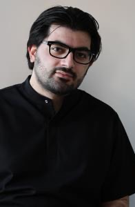

Стоимость консультации
4 500 рублей
ЗаписатьсяПовторная консультация (в течение 3-х месяцев после первичной) — 4 000 рублей, без 14-дневного сопровождения.

Помогаю вернуть жизнь без постоянных проблем с ЖКТ, даже в случаях, когда лечение не помогло
Занимаюсь диагностикой и лечением заболеваний желудочно-кишечного тракта. В своей работе придерживаюсь принципов доказательной медицины.
01 онлайн-консультация
Стоимость консультации
4 500 рублей
ЗаписатьсяПовторная консультация (в течение 3-х месяцев после первичной) — 4 000 рублей, без 14-дневного сопровождения.
Разъяснительная беседа с дальнейшим онлайн-сопровождением в течение 14 суток.
Вы сможете оперативно, без каких-либо очередей и поездок из любой точки мира, где есть доступ в интернет, получить консультацию квалифицированного врача.
Вы не получите ненужные рекомендации по строгим диетам, не придется сдавать ненужные анализы, пить «гору» непонятных препаратов.
до 1-го часа
По видео- или аудиосвязи (Zoom, Skype, Telegram, WhatsApp): сбор жалоб и истории болезни.
в течение 24 часов
Подробное заключение с рекомендациями по питанию, образу жизни; возможных методах обследования и лечения.
14 суток
Вы можете в письменной форме задать вновь возникшие вопросы или отправить результаты обследования.
02 также обо мне
2024
Лучший врач-гастроэнтеролог онлайн-платформы доказательной медицины «СберЗдоровье»
Автор блога Doctor.Vardanyan с аудиторией более 10 000 человек.
Являюсь спикером на курсах повышения квалификации на платформах SmartDoctor, NeuroGastroAcademy (лекции на тему: «Базисная терапия ВЗК», «Синдром раздраженного кишечника», «Функциональные заболевания пищевода и желчного пузыря»).
Один из трёх выпускников 1-го потока школы DocmaSchool по гастроэнтерологии, успешно сдавших заключительный экзамен.
Прочитать отзывы обо мне или оставить свой можно по ссылкам ниже